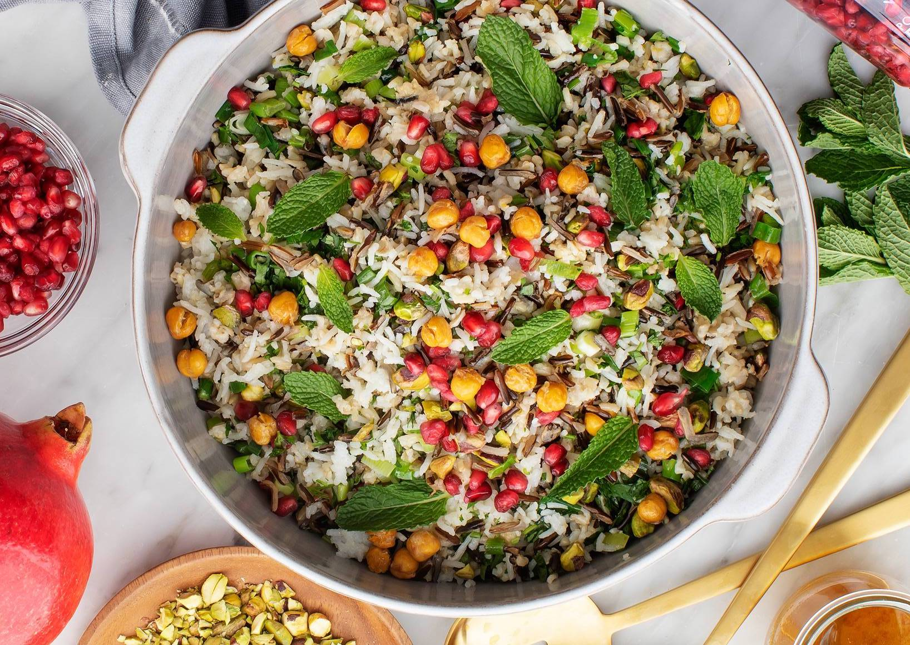

Pomegrante Rice Salad

Flecked with your choice of rice white, brown or basmati easy Holiday side dish.
Ingredients
- 4 cups cooked grain rice(any kind optional)
- 2teaspoon extra-virgin olive oil
- 1 bunch scallions(white and green parts choped)
- Cloves garlic(minced)
- 1/3 cup toasted(chopped pistachios)
- Herbs mint leaves and finely chpped parsley fleck
Method
- Start by cooking the rice
- let the rice cool and whisk together the dressing
- lightly saute the scallions and garlic and some parsley and stir the cooked rice in to the pan
- Transfer the rice salad to a serving dish, drizzle it with more dressing and top it with more
parsley, mint
and fresh pmegrante
- serve at room temperature or slightly warm enjoy!
Return to main page